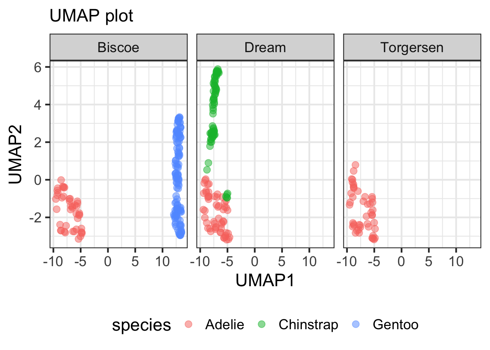

![]()
### Load packages
pacman::p_load(
tidyverse, # tidy data
FactoMineR, # compute principal component methods
factoextra, # extract, visualize and interpretate the results
corrplot # visualize cos2 of variables
)Library and data
### load packages
rm(list = ls())
pacman::p_load(
tidyverse,
broom,
palmerpenguins
)
### demo data
penguins <- penguins |>
drop_na() |>
select(-year)
head(penguins)
## # A tibble: 6 × 7
## species island bill_length_mm bill_depth_mm flipper_length_mm body_mass_g
## <fct> <fct> <dbl> <dbl> <int> <int>
## 1 Adelie Torgersen 39.1 18.7 181 3750
## 2 Adelie Torgersen 39.5 17.4 186 3800
## 3 Adelie Torgersen 40.3 18 195 3250
## 4 Adelie Torgersen 36.7 19.3 193 3450
## 5 Adelie Torgersen 39.3 20.6 190 3650
## 6 Adelie Torgersen 38.9 17.8 181 3625
## # ℹ 1 more variable: sex <fct>PCA
### Perform PCA using prcomp()
pca_fit <- penguins |>
select(where(is.numeric)) |>
scale() |>
prcomp()
### importance of components
pca_fit
## Standard deviations (1, .., p=4):
## [1] 1.6569115 0.8821095 0.6071594 0.3284579
##
## Rotation (n x k) = (4 x 4):
## PC1 PC2 PC3 PC4
## bill_length_mm 0.4537532 -0.60019490 -0.6424951 0.1451695
## bill_depth_mm -0.3990472 -0.79616951 0.4258004 -0.1599044
## flipper_length_mm 0.5768250 -0.00578817 0.2360952 -0.7819837
## body_mass_g 0.5496747 -0.07646366 0.5917374 0.5846861
summary(pca_fit)
## Importance of components:
## PC1 PC2 PC3 PC4
## Standard deviation 1.6569 0.8821 0.60716 0.32846
## Proportion of Variance 0.6863 0.1945 0.09216 0.02697
## Cumulative Proportion 0.6863 0.8809 0.97303 1.00000
### visualize the PC1 and PC2
pca_fit |>
augment(penguins) |>
rename_at(
vars(starts_with(".fitted")),
list(~str_replace(., ".fitted", ""))
) |>
ggplot(aes(x = PC1, y = PC2, color = species, shape = sex)) +
geom_point()
UMAP
rm(list = ls())
### load packages
pacman::p_load(
tidyverse,
umap,
palmerpenguins
)
### theme set
theme_set(theme_bw(18))
### subset data
penguins <- penguins |>
drop_na() |>
select(-year) |>
mutate(ID = row_number())
### meta data
penguins_meta <- penguins |>
select(ID, species, island, sex)
### umap analysis
set.seed(123)
umap_fit <- penguins |>
select(where(is.numeric)) |>
column_to_rownames("ID") |>
scale() |>
umap()
### retrieve data from umap analysis
umap_df <- umap_fit$layout |>
as.data.frame() |>
rename(UMAP1 = "V1", UMAP2 = "V2") |>
mutate(ID = row_number()) |>
inner_join(penguins_meta, by = "ID")
### visualize umap
umap_df |>
ggplot(aes(x = UMAP1, y = UMAP2, color = species, shape = sex)) +
geom_point() +
labs(x = "UMAP1", y = "UMAP2", title = "UMAP plot")
### facet by island
umap_df |>
ggplot(aes(x = UMAP1, y = UMAP2, color = species))+
geom_point(size = 3, alpha = 0.5) +
facet_wrap(~island) +
labs(x = "UMAP1", y = "UMAP2", subtitle = "UMAP plot") +
theme(legend.position = "bottom")
### circlize the outlier cases
pacman::p_load(
ggforce
)
umap_df |>
ggplot(aes(x = UMAP1, y = UMAP2, color = species, shape = sex)) +
geom_point()+
labs(x = "UMAP1", y = "UMAP2", subtitle = "UMAP plot") +
geom_circle(aes(x0 = -5, y0= -3.8, r = 0.65), color = "green", inherit.aes = FALSE)
## Warning: Using the `size` aesthetic in this geom was deprecated in ggplot2 3.4.0.
## ℹ Please use `linewidth` in the `default_aes` field and elsewhere instead.
tSNE
rm(list = ls())
### load packages
pacman::p_load(
tidyverse,
Rtsne,
palmerpenguins
)
### theme set
theme_set(theme_bw(18))
### subset data
penguins <- penguins |>
drop_na() |>
select(-year) |>
mutate(ID = row_number())
### meta data
penguins_meta <- penguins |>
select(ID, species, island, sex)
### tSNE analysis
set.seed(135)
tsne_fit <- penguins |>
select(where(is.numeric)) |>
column_to_rownames("ID") |>
scale() |>
Rtsne()
### retrive data
tsne_df <- tsne_fit$Y |>
as.data.frame() |>
rename(tSNE1 = "V1", tSNE2 = "V2") |>
mutate(ID = row_number())
tsne_df <- tsne_df |>
inner_join(penguins_meta, by = "ID")
### check data
head(tsne_df)
## tSNE1 tSNE2 ID species island sex
## 1 -5.127350 4.292314 1 Adelie Torgersen male
## 2 -7.674396 9.468690 2 Adelie Torgersen female
## 3 -6.789063 11.077920 3 Adelie Torgersen female
## 4 -8.577962 6.089660 4 Adelie Torgersen female
## 5 -10.808965 4.242488 5 Adelie Torgersen male
## 6 -4.838300 6.133550 6 Adelie Torgersen female
### visualize
tsne_df |>
ggplot(aes(x = tSNE1, y = tSNE2, color = species, shape = sex)) +
geom_point()+
theme(legend.position = "bottom")